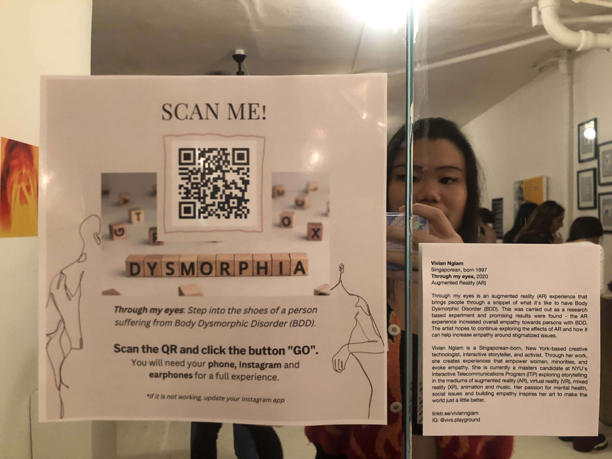

REFLECTIONS
If I were to put this AR experience in an exhibition again, I would do a couple things differently.
For this particular exhibition, I had no information about the floor plan, what resources we had or didn’t have, and no information on the other artworks exhibiting as well. One of the users actually teared up during the experience and had to go to a darker corner of the exhibition space to finish the experience. Because it is such a private, intimate, challenging and triggering experience, a private space is a must. Hence, I would definitely make sure to section out a private quiet space for this experience in the future and make sure that the exhibition's tone matches with the piece. Additionally, trigger warnings needed to be accounted for before engaging with the experience. For my research, there were consent forms, introductions, and prior briefings before participants engaged in this experience. Similarly, for this to be at future exhibitions, it needs something similar as well.

Exhibition layout at Active Minds Mental Health Art Exhibition 2022
Having a QR code was a good way to allow people to bring home the experience and accommodating more people to experience it simultaneously. However, it is meant to be an individual experience in a private space. To provide for a more seamless user experience, I want to provide a phone or tablet, headphones and the experience already loaded on the device ready for the user. So, the user can simply walk into this private space, sit down and engage with the AR experience with the materials already provided for them. And if they would like to bring home the experience with them, they can scan the QR code. In other words, next time, the QR code would not be the main way of engagement. Unfortunately in this exhibition, no device resources were available and so I used my personal phone and headphones for people who wanted to try it at the exhibition. Some people used their own phones and headphones, but considering exhibition design where the artist won’t be present all the time, this would be the future route I take.
I would have a voice actor re-narrate the script for the American audience. It can also be expanded in different languages.
I am thinking of using AI to detect people’s existing hair color and generating a fringe that matches their hair to make the experience more realistic, especially for people who don’t have black hair (as the current fringe is defaulted to black). As found in my research, the greater the realism, the greater the empathy. Hence, this would be an impactful change.